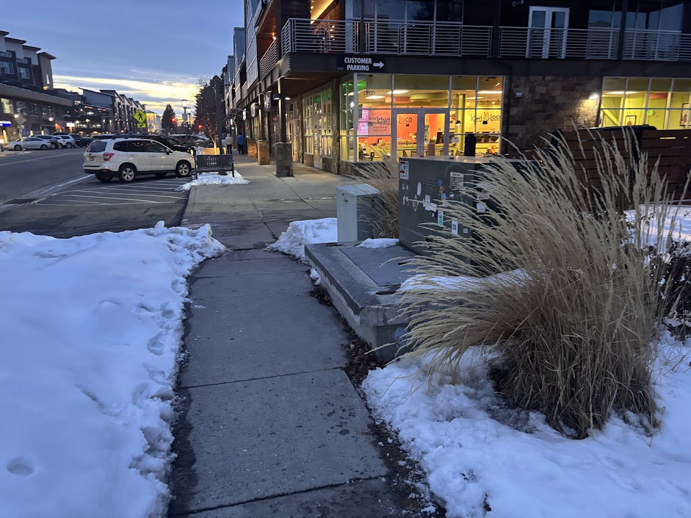
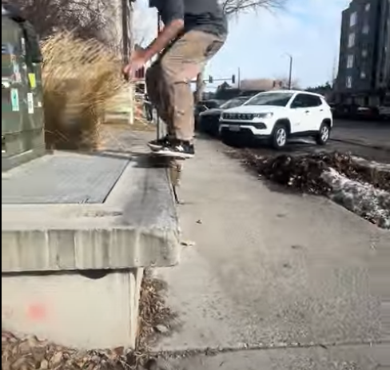
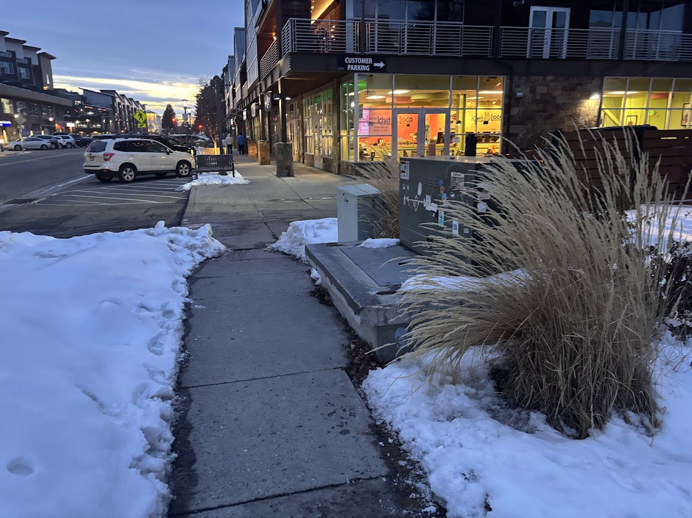
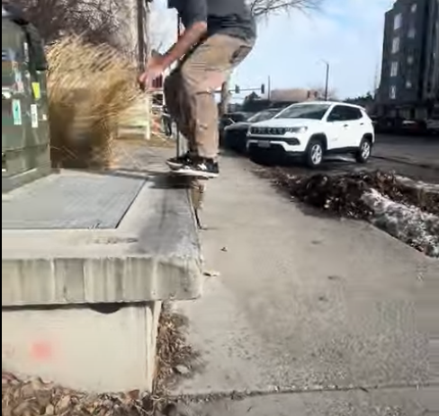

The KIWI ledge is a perfect height for intermediate skaters and is super smooth for grinds. The ledge runs long and clean, making it great for learning tricks like 50-50s — but it is slightly tall, which can be intimidating for beginners.
The cracked sidewalk makes the run-up a bit sketchy, and daytime foot traffic can be a problem. Bring wax — this thing gets crusty fast.
A classic go-to in Rexburg that’ll help you build confidence and style.
5-6-7 are three stair sets lined up in a row — perfect for leveling up your stair game. Start small with the 5, build confidence with the 6, and then hit the 7 when you’re feeling it.
Foot traffic can be heavy during the day, especially around class change. Best session times: early morning or after sunset. Run-up is short but manageable for most setups.
A solid challenge spot with room to grow — progression zone unlocked.
 


